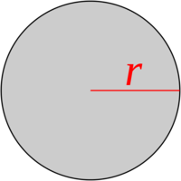
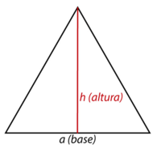

Calculadora Geométrica
Figuras 2D
Cálculo de áreas y perímetros
Figuras 3D
Cálculo de volúmenes y áreas
Matrices
Cálculo de determinantes 4x4

radio =
⭕ Círculo
Los resultados aparecerán aquí
lado =
⬜ Cuadrado
Los resultados aparecerán aquí

h =
b =
🔺 Triángulo
Los resultados aparecerán aquí

r =
🟠 Esfera
Los resultados aparecerán aquí

a =
🧊 Cubo
Los resultados aparecerán aquí

r =
h =
🥤 Cilindro
Los resultados aparecerán aquí
Determinante de Matriz 4x4
Ingrese los 16 valores de la matriz:
El determinante aparecerá aquí